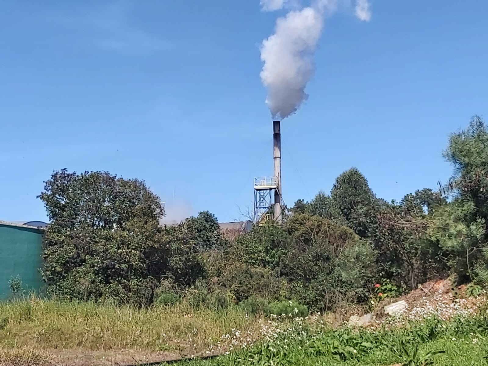

Imagem de Freepik
Meio Ambiente com a tecnologia
Por mais que os grandes avanços da tecnologia acarretam diversos problemas para nosso meio ambiente, existem projetos que visam ajudar com essas difículdades que nós temos hoje em dia. A tecnologia ambiental demonstra que é sim, possível desenvolver e cuidar do nosso planeta.
Os obstáculos ambientais que nosso planeta vem enfrentando não são poucos nem mesmo fáceis de resolver, coisas como a poluição do ar, extinção de várias espécies, desmatamentos, são problemas que demonstram grandes ameaças e se quisermos ter o planeta como um lar, são contratempos que precisam ser resolvidos.

Foto de João Guilherme Kuspiosz
Robô Clarke
A reciclagem é muito importante para ajudar nosso ambiente, recursos reaproveitáveis sendo descartados como lixo, que poderiam ser transformados em novos produtos!! A reciclagem também ajuda na conservação de recursos naturais como a madeira, água, minerais, etc, ela também contribui com a redução de custos com a limpeza urbana, além de evitar a poluição reduzindo assim as emissões de gases de efeito estufa. Por isso, a AMP Robotics criou o 'Clarke', um robô que reduz drasticamente o custo da reciclagem e torna as instalações de reciclagem mais autônomas.
O Clarke é um sistema robotizado inteligente que pode identificar e rapidamente retirar materiais recicláveis de uma esteira para fazer sua separação. O sistema funciona com 90% de precisão e trabalha 50% mais rápido do que um empregado humano com a mesma atividade.
O custo de separação é reduzido em mais de 50%. As instalações de reciclagem conseguem um valor adicional, junto do aumento do tempo de atividade e a recuperação de materiais de maior qualidade.
Confira o robô em ação abaixo:
Robótica com a sustentabilidade.
Sustentabilidade é o que busca atender nossas demandas e é dividida em 3 partes, a que busca equidade social, práticas sustentáveis para o meio ambiente e a parte que lida com o valor econômico criado por uma organização. Essas são as visões mais ampla em práticas sustentáveis.
As práticas da Robótica Sustentável ajudam a contribuir com a diminuição do impacto ambiental, no momento que reutiliza lixos eletrônicos, além de ser uma atividade de baixo custo.

Imagem de Sketchepedia no Freepik